第 1 讲：游戏引擎导论——什么是游戏引擎，它为什么是现代计算机技术的奇迹
从“游戏引擎是什么”讲到它为什么值得学：定义、历史、组成、复杂度与课程路线图
◆ 学完这一讲，你应该能
能用自己的话给出游戏引擎的定义，并解释“框架/中间件/工具链”三层含义
能说出游戏引擎发展史上的几个关键节点（Wolfenstein 3D、Doom、Quake、现代商业引擎）及其技术意义
能列举游戏引擎的主要子系统（渲染、动画、物理、Gameplay、工具链、在线等）并说明它们各自解决什么问题
能解释为什么游戏引擎是“复杂度”与“实时性”双重约束下的工程，理解“God with Limited Power in Realtime”的含义
了解本课程的组成（Mini Engine、作业、项目）与学习路径
核心结论速记
游戏引擎是“主要面向电子游戏开发的软件框架”，通常包含相关库与支持程序；它既是技术底座，也是生产力工具，更是驾驭复杂度的艺术。
引擎的核心价值在于把“执行核心功能”的代码与“填充具体游戏内容”的资产分离——这一思想从 John Carmack 的 Wolfenstein 3D 时代就确立了。
Doom 定义了 FPS 类型并首创在线分发、3D 图形、网络对战与 WAD 模组支持；Quake 则带来完整实时 3D 渲染与 OpenGL 硬件加速。
现代引擎按来源可分为商业引擎、自研引擎与免费引擎；按中间件可分为渲染、物理、动画、音频等模块。
游戏引擎远不止渲染：它要模拟一个无限细节的世界，涉及数学、物理、AI、动画、音频、网络、工具链等几乎所有计算机科学主要领域。
实时是硬约束：引擎要在 1/30 或 1/60 秒内完成一帧的全部模拟与渲染，因此必须在“有限算力”下做大量取舍。
引擎同时服务程序员（可扩展 API）、美术/策划（协作工具链）与运营（在线更新），是一个多角色协作平台。
本课程以“搭框架、抓主干”为路线，通过 Mini Engine 与分阶段作业，把引擎的主要系统亲手实现一遍。
011. 为什么游戏引擎是现代计算机技术的奇迹
这一讲的开篇没有直接给定义，而是先给了一个“体量”上的震撼：游戏产业的市场规模已经达到千亿美元级别，超过电影与音乐产业的总和；而支撑这些游戏的引擎，覆盖了计算机科学几乎所有的分支。
课件用一张图把“游戏引擎技术覆盖的主要计算机科学领域”铺开：渲染、动画、物理、人工智能、音频、网络、数据结构、编译原理、操作系统、图形学、数值计算……这不是夸张，而是因为一个现代 3D 游戏要在实时约束下同时做这些事。
理解这一点很重要：游戏引擎不是“画图的库”，而是一个在严格时间预算内协调无数子系统的运行时框架。课件里有一句很形象的话——“God with Limited Power in Realtime”（在实时约束下拥有有限权力的神）：引擎试图在虚拟世界里模拟一切，但算力永远有限，所以引擎工程的核心工作之一就是做取舍。
这也解释了为什么学习引擎不能只学渲染。渲染只是最终把画面呈现出来的那一步，而在它之前，世界状态需要被模拟、更新、同步、序列化。课件把引擎比作“皇冠上的钻石”（The Diamond on the Crown）：游戏是计算机技术皇冠上的明珠，而引擎是这颗明珠里最硬的那块钻石。
对自学者的建议：不要被“覆盖所有 CS 领域”吓到。课程的目标不是让你一次学完所有东西，而是先建立框架感——知道每个子系统在整体中的位置、输入输出是什么、和其他系统怎么交互，然后再逐个深入。
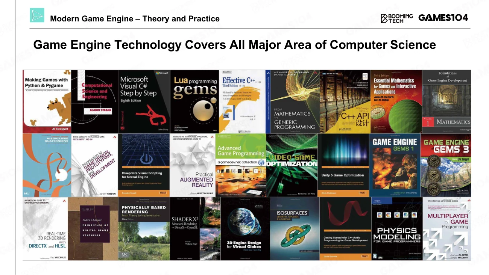
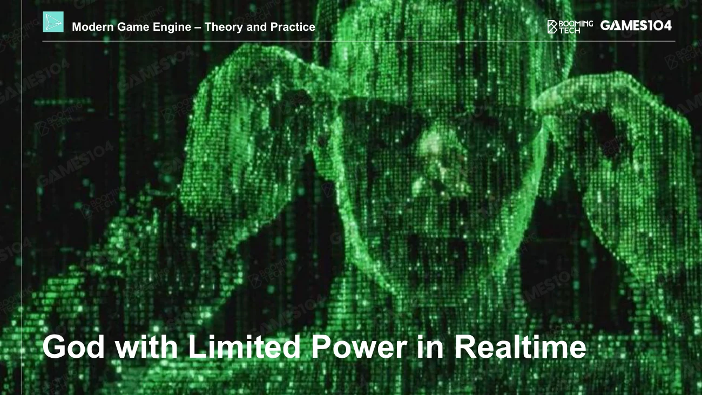
补充说明
这一节是“为什么学”的铺垫，重点建立引擎的全局观，不必纠结具体技术细节。
常见坑
把游戏引擎等同于渲染器 → 只关注画面效果，忽略模拟、工具链与运行时框架 → 学习时应有意识地按子系统建立知识地图。
认为“实时”只是帧率问题 → 实际上实时约束会反向决定算法选择（如近似、缓存、分帧），不理解这一点会看不懂很多引擎设计。
UE / Unity 落地
UE 的渲染只是其子系统之一，此外还有 Chaos 物理、Niagara 特效、Sequencer 动画、UMG、网络同步等，可以在编辑器里直观看到这些模块的边界。
Unity 同样把渲染（URP/HDRP）、物理（PhysX）、动画（Mecanim）、音频等拆成独立模块，理解模块边界有助于排查问题。
022. 游戏引擎的定义：框架、工具与复杂度的艺术
课件给出了一个比较正式的定义：游戏引擎是主要面向电子游戏开发的软件框架，通常包含相关的库与支持程序。这个定义里有两个关键词：框架（framework） 和 支持程序（support programs）。
“框架”意味着它提供了一套可复用的骨架：渲染循环、资源管理、输入处理、场景组织等，开发者在其上填充具体游戏逻辑。“支持程序”则包括编辑器、资源管线、调试工具等——这些往往不被玩家看到，却决定了开发效率。
课件进一步给出了课程自己的三层定义，非常值得记住：
- 技术底座（Technology foundation of the Matrix）：引擎是虚拟世界的底层技术，决定了“能做什么”。
- 生产力工具（Productivity tools of creation）：引擎是给美术、策划、程序协作使用的工具集，决定了“做得多快”。
- 复杂度的艺术（The Art of Complexity）：引擎要在有限资源下管理海量状态与交互，决定了“做得多稳”。
这三层分别对应引擎的三种视角：运行时视角、工具视角、工程视角。很多初学者只关注第一层（比如渲染效果），但真正让一个引擎可用、可维护的，往往是后两层。
课件还强调，引擎这个词在软件行业里和“software engine”类似，指的是“驱动整个系统运转的核心”。所以游戏引擎也可以指“使用这套框架的开发软件”本身（比如我们常说的“用 UE 做游戏”）。
理解定义的意义在于：当你在引擎里遇到一个功能时，可以问自己——它属于运行时框架、工具链，还是复杂度管理的一部分？这能帮你快速定位问题。
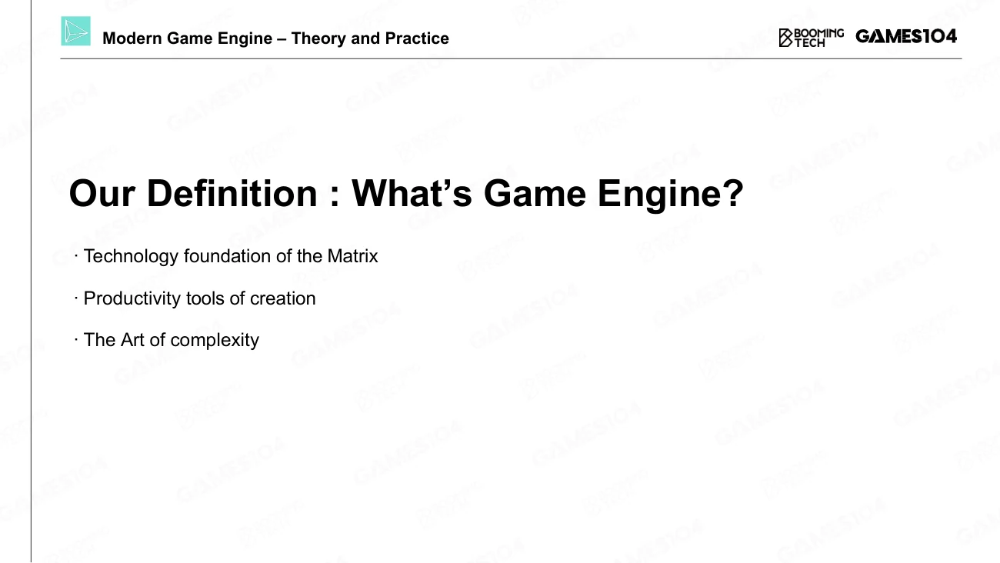
补充说明
定义部分建议结合后面“引擎组成”一节一起看，会更有体感。
常见坑
把“引擎”只理解成运行时库 → 忽略编辑器和工具链，导致开发效率低、问题定位慢 → 学习时也要关注编辑器与资源管线。
认为“复杂度”是代码量问题 → 实际上更多是状态与交互的组合爆炸 → 引擎设计里大量模式（如 ECS、事件系统）都是为了控制复杂度。
UE / Unity 落地
UE 的 Editor 与 Runtime 是两套可执行程序，但共享大量核心模块；理解这一点有助于明白为什么有些功能只在编辑器里可用。
Unity 的 Editor 扩展（自定义 Inspector、工具窗口）就是“生产力工具”这一层的典型体现。
033. 从 Wolfenstein 3D 到 Quake：引擎史就是一部技术突破史
课件用了几页篇幅讲早期历史，这不是怀旧，而是因为现代引擎的很多设计思想在那个时候就定型了。
John Carmack 与 Wolfenstein 3D（1992）：课件称他为“游戏引擎之父”。他的关键贡献不是某个算法，而是一种组织方式——把“执行核心功能”的引擎代码与“填充游戏内容的资产”分离。在此之前，很多游戏是把逻辑和内容硬编码在一起的。这种分离让“同一套引擎做不同游戏”成为可能，也是今天引擎复用性的源头。
Doom（1993）：课件说它“定义了 FPS 类型”，并且是第一个在线分发的游戏，还开创了 3D 图形、网络多人对战、以及通过 WAD 文件支持自定义模组（mod）的先河。这里的技术意义在于：Doom 证明了引擎可以成为内容平台——玩家可以自己制作关卡，极大延长了游戏生命周期。
Quake（1996）：与 Doom 不同，Quake 提供了完整的实时 3D 渲染，并支持通过 OpenGL 进行早期 3D 硬件加速。这是从“伪 3D”（Doom 的 2.5D）到“真 3D”的跨越，也奠定了现代 3D 引擎的渲染管线基础。
这条历史线的启示是：引擎的每一次跃迁，往往来自对某种约束的突破——从 2D 到 3D、从离线到实时、从单机到在线。今天我们在 UE5 里看到的 Nanite、Lumen，本质上也是在突破“几何复杂度”和“动态全局光照”的约束。
对自学者来说，不必记住所有年份，但要记住每个节点解决了什么问题：分离内容与逻辑、在线分发与模组、实时 3D 与硬件加速。
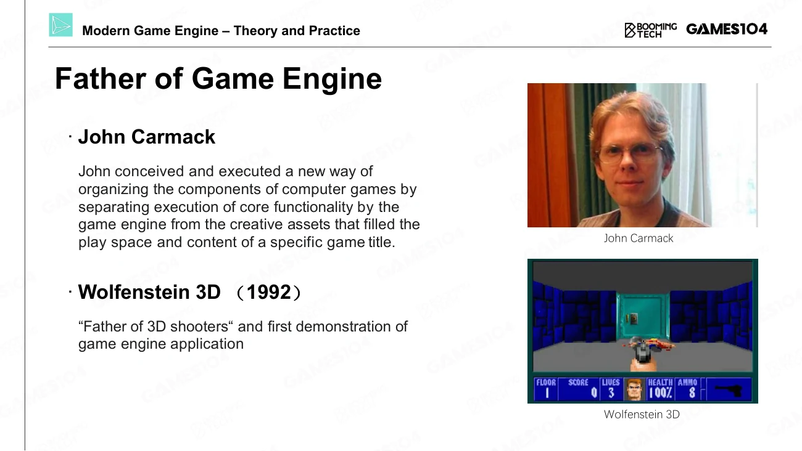
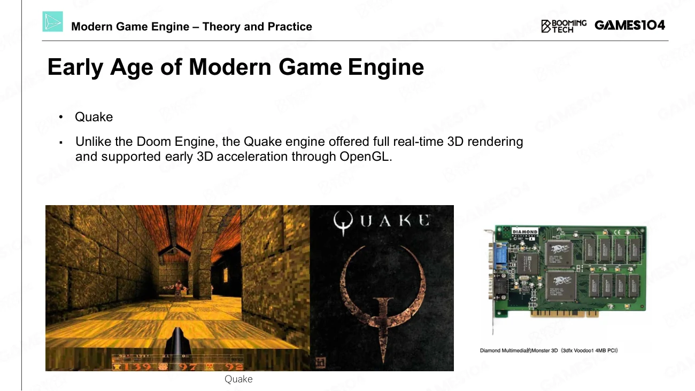
补充说明
如果对历史感兴趣，可以延伸阅读 Doom 引擎源码（id-Software/DOOM）来感受“引擎与内容分离”的具体做法。
常见坑
把 Doom 的“3D”当成真 3D → 它本质是 2.5D（高度固定），理解这一点才能明白 Quake 的突破在哪。
只记年份不记问题 → 历史变成死记硬背 → 建议按“约束—突破”的线索记忆。
UE / Unity 落地
UE 的资产与代码分离（Content 目录 vs C++ 模块）正是 Carmack 思想的现代体现；你可以用同一套 C++ 框架做不同项目。
Doom 的 WAD 模组机制对应今天 UE 的 Pak 文件与 Mod 支持，Unity 的 AssetBundle 也是类似思路。
044. 引擎的家族与中间件：商业、自研、免费，以及渲染/物理/动画/音频
课件把游戏引擎按来源分成三类：商业引擎（Commercial Engine）、自研引擎（In-house Engine）、免费引擎（Free Engine）。
- 商业引擎：如 Unreal Engine、Unity，授权给外部使用，通常有完善的工具链与技术支持。
- 自研引擎：大厂内部使用，如 EA 的 Frostbite、育碧的 Anvil 等，通常为特定类型的游戏深度优化。
- 免费引擎：如 Godot、Cocos，开源或免费使用，适合学习与小团队。
课件还展示了“引擎的中间件（Middleware）”分类：渲染（Rendering）、物理（Physics）、动画（Animation）、音频（Audio），以及其他。中间件是指引擎中可替换的独立模块，比如物理可以用 Havok、PhysX，音频可以用 Wwise、FMOD。
理解“中间件”概念很重要：它说明引擎是分层、可组合的。一个引擎不必自己实现所有东西，而是可以把不同中间件集成进来。这也解释了为什么 UE 的物理是 Chaos（自研），而音频可以接 Wwise。
对自学者的实践意义：当你想深入某个方向时，可以沿着中间件的边界去学。比如想学渲染，就聚焦渲染管线与材质系统；想学物理，就聚焦碰撞检测与刚体求解。不要试图一次吃下整个引擎。
课件还提到“引擎的家族”图，把商业、自研、免费放在一起对比，帮助你建立市场认知。
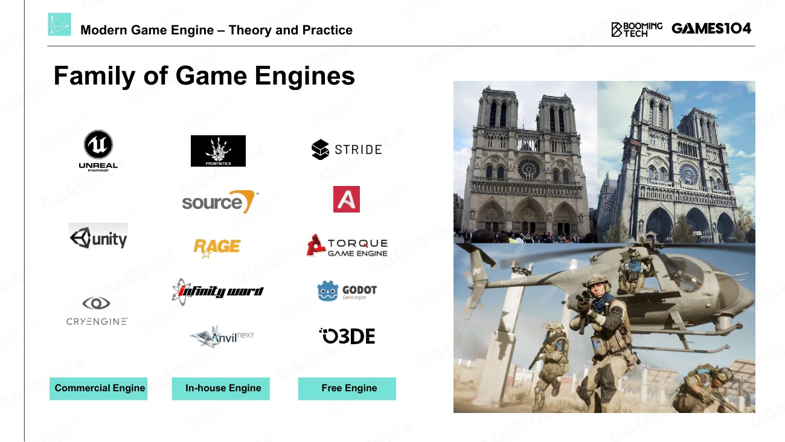
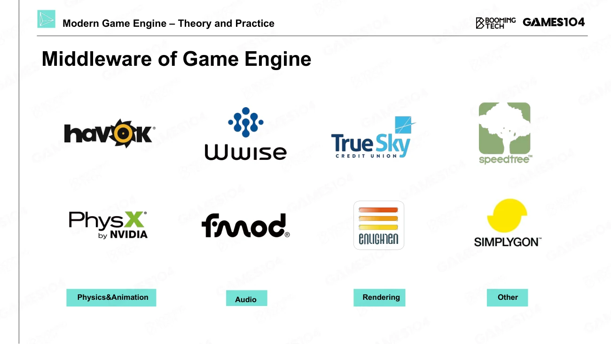
补充说明
中间件的边界不是绝对的，很多引擎会把某些中间件深度整合，但概念上仍可区分。
常见坑
认为“自研引擎一定比商业引擎强” → 自研通常是为特定项目深度优化，通用性和工具链未必更好 → 选型要看项目需求。
把中间件和引擎核心混为一谈 → 中间件是可替换模块，核心是框架与运行时 → 学习时先抓核心框架，再深入中间件。
UE / Unity 落地
UE 的物理（Chaos）、音频（可接 Wwise）、动画（Control Rig）都是中间件式设计，可以在项目设置里看到模块开关。
Unity 的物理默认是 PhysX，渲染有 URP/HDRP 可选，音频可接 FMOD，同样是中间件思路。
055. 引擎到底包含什么：从基础元素到工具链
课件用一张大图（Basic Elements）展示了引擎的组成，可以分成几层来看：
第一层：引擎结构与分层（Engine structure and layers）。引擎通常分为工具层、功能层、核心层、平台层。工具层是编辑器和资源管线；功能层是渲染、动画、物理等；核心层是数学库、容器、内存管理；平台层是对操作系统与硬件的抽象。
第二层：数据组织与管理（Data organization and management）。包括资源管理（Resource Management）、序列化、场景图等。引擎里大量工作是在管理数据，而不是计算。
第三层：具体子系统。课件列出的包括：渲染（Rendering）、动画（Animation）、物理（Physics）、Gameplay（事件系统、脚本系统、Graph-Driven）、杂项系统（特效、导航、相机等）、在线（Online Gaming）、工具链（Toolchain）。
其中 Gameplay 部分特别值得注意：它包含事件系统（Event System）、脚本系统（Scripts System）和 Graph-Driven（图形驱动，如蓝图/可视化脚本）。这说明现代引擎越来越倾向于让非程序员也能参与逻辑搭建。
工具链（Toolchain） 是课件反复强调的部分：C# 反射（Reflection）用于把变量和函数暴露到编辑器；数据模式（Data Schema）用于描述系统处理的数据结构。这些是“生产力工具”的具体技术支撑。
在线游戏（Online Gaming） 包括锁步同步（Lockstep synchronization）、状态同步（State synchronization）、一致性（Consistency）等。
高级技术（Advanced Technology） 课件提到了 Motion Matching（运动匹配）、面向数据编程（DOP/ECS）、Lumen、Nanite 等。这些是当前引擎的前沿方向，后续课程会展开。
学习建议：把这张图当作“地图”，每学一个子系统就回到图上定位它。这样不会迷失在细节里。
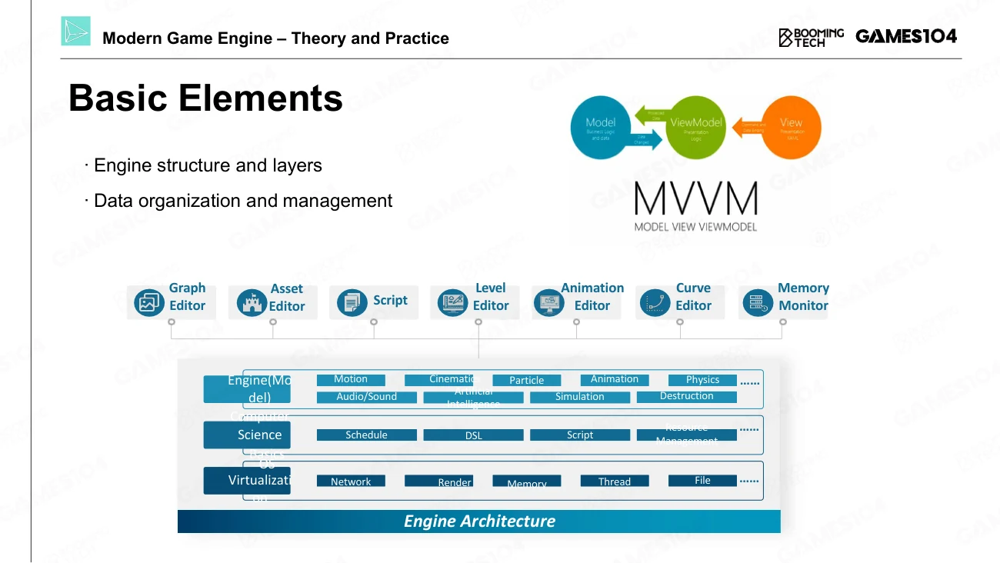
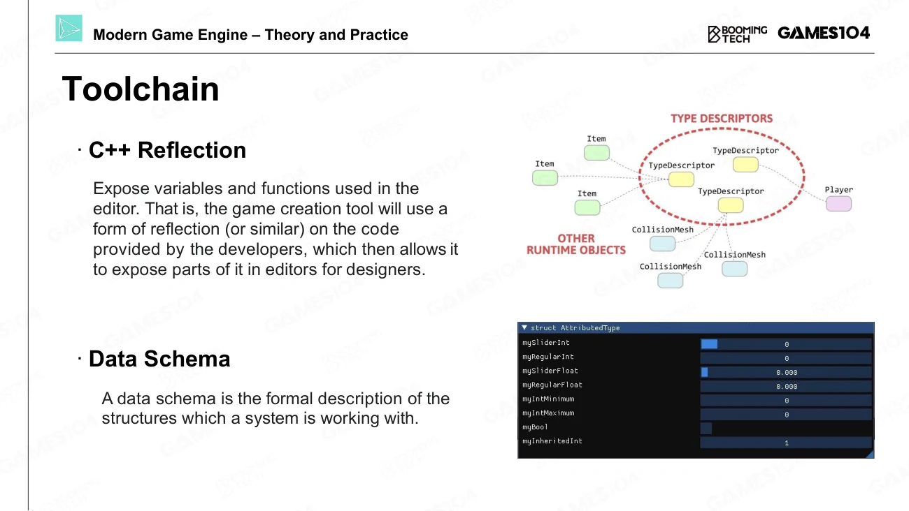
补充说明
这一节信息量大，建议先记住分层（工具/功能/核心/平台）和子系统名称，细节后续课程会逐个展开。
常见坑
只学渲染，忽略数据管理与工具链 → 做项目时资源混乱、迭代慢 → 要有意识地学习资源管理与编辑器扩展。
把 Gameplay 等同于“写逻辑” → 现代引擎的 Gameplay 包含事件、脚本、可视化图，是多人协作的产物 → 理解不同角色的工作流。
UE / Unity 落地
UE 的蓝图（Blueprint）对应课件里的 Graph-Driven；C++ 的 UPROPERTY/UFUNCTION 反射对应 C# 反射那一页。
Unity 的 ScriptableObject 与自定义 Editor 对应数据模式与工具链；DOTS/ECS 对应面向数据编程。
UE 的 Lumen/Nanite 就是课件“高级技术”里提到的两个方向，可以在项目设置里开关并观察性能差异。
066. 实时约束下的工程：为什么引擎要“做取舍”
课件用“God with Limited Power in Realtime”这句话点出了引擎工程的核心矛盾：你想要模拟一个无限细节的世界，但算力、内存、带宽都是有限的，而且必须在实时内完成。
课件展示了“模拟复杂度”的示意图：从物体（Object）到地形（Terrain）、粒子（Particle）、流体（Fluid）、光照（Lighting）、破坏（Destruction）等，复杂度呈爆炸式增长。这就是为什么引擎里充满了近似与技巧：
- 渲染里用 LOD、剔除、烘焙光照、屏幕空间效果来近似；
- 物理里用简化碰撞体、分帧更新、休眠机制；
- 动画里用骨骼压缩、Motion Matching 来减少手工状态机；
- 网络里用插值、预测、回滚来掩盖延迟。
这些技巧不是“偷懒”，而是在实时约束下的工程最优解。理解这一点，你在读引擎源码或调性能时，就不会觉得“为什么这里这么绕”——绕是为了省。
课件还提到“引擎远不止渲染”（Game Engine is Far Beyond Rendering），并列举了工具链、开发者平台、在线更新等。比如“Update the Engine in the Air”指的是引擎的热更新能力，这对长线运营的游戏至关重要。
对自学者的建议：每学一个技术点，都问一句“它省了什么？代价是什么？”比如 Lumen 省了烘焙光照的时间，代价是运行时性能开销。这种权衡思维是引擎工程师的核心素养。
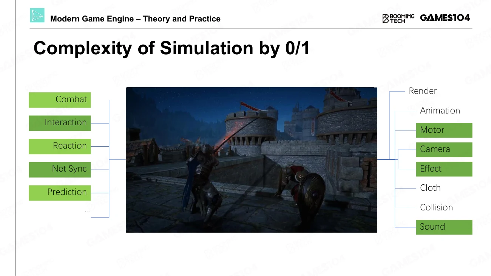
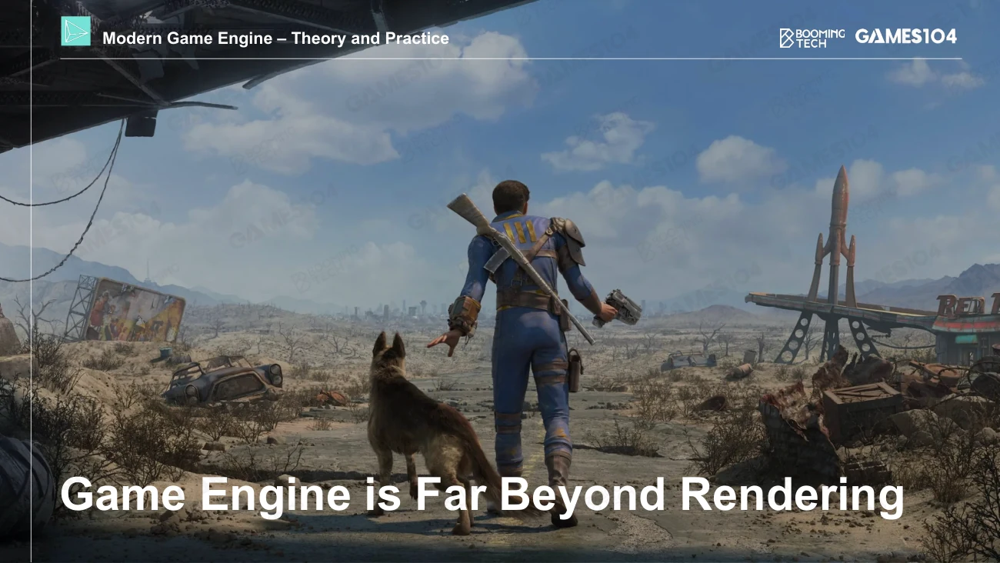
补充说明
这一节是思想课，建议结合后面具体子系统反复回看。
常见坑
追求“物理正确”而忽略实时性 → 帧率暴跌 → 引擎里大量使用近似，先保证实时再谈正确。
把性能优化当成最后一步 → 实际上引擎设计之初就要考虑预算（每帧多少毫秒给渲染、多少给物理）→ 建立预算意识。
UE / Unity 落地
UE 的 Stat 命令（stat unit、stat gpu）可以查看每帧各子系统耗时，直观感受“预算”概念。
Unity 的 Profiler 同样可以分模块查看 CPU/GPU 耗时，帮助理解取舍。
077. 课程路线图：Mini Engine、作业与项目
最后一部分是课程信息，虽然看起来“不技术”，但对自学者很重要，因为它告诉你这门课希望你达到什么程度、怎么练。
课件给出的课程组成包括：
- Mini Engine：一个迷你运行时框架 + 迷你编辑器，目标是帮你建立游戏引擎的基础知识体系。也就是说，你不是只看幻灯片，而是要亲手搭一个能跑的小引擎。
- 作业（Assignments）：以编程任务为主，提供代码骨架和虚拟机镜像；语言是 C++；大约每周不超过 200 行代码；每四周提交一次，一周内给反馈。
- 课程项目/期末项目：课程中段开始，题目自选，优秀作品会在线展示。
- 没有考试，以作业和项目为主。
课件还给了参考书：Jason Gregory《Game Engine Architecture》（第三版或更新），这是引擎架构领域最经典的书，建议作为案头参考。
对自学者的建议：
- 不要跳过 Mini Engine。哪怕你只想用 UE 做游戏，亲手写一遍渲染循环、资源管理、事件系统，会让你对 UE 的行为有“透视感”。
- 作业按周推进，不要攒。引擎知识是累积的，前面没懂后面会卡。
- 项目选题尽量小，但要做完整（能跑、能演示），完整比宏大更有价值。
课件最后是致谢与版权说明，所有视频和图片来自互联网，仅用于演示。
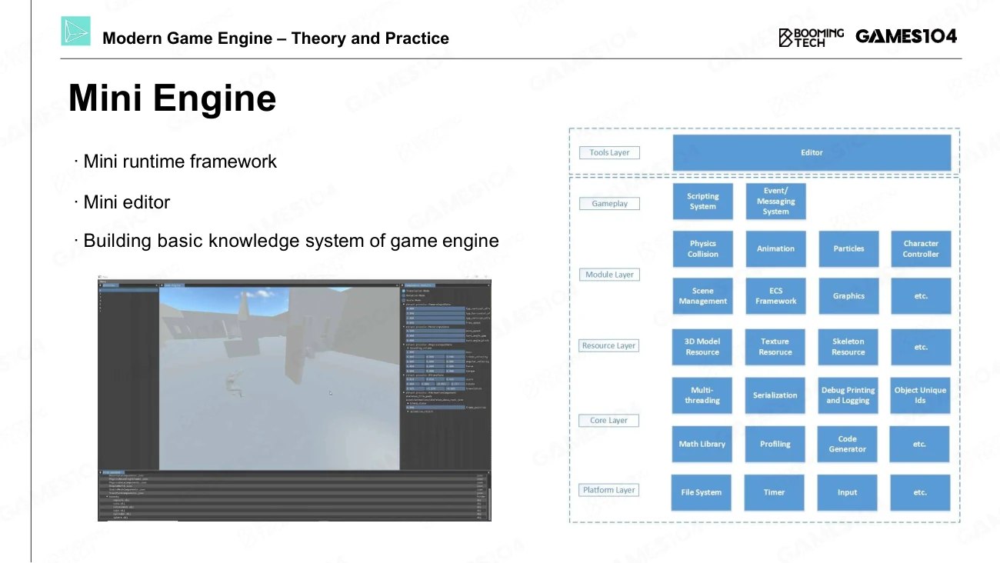
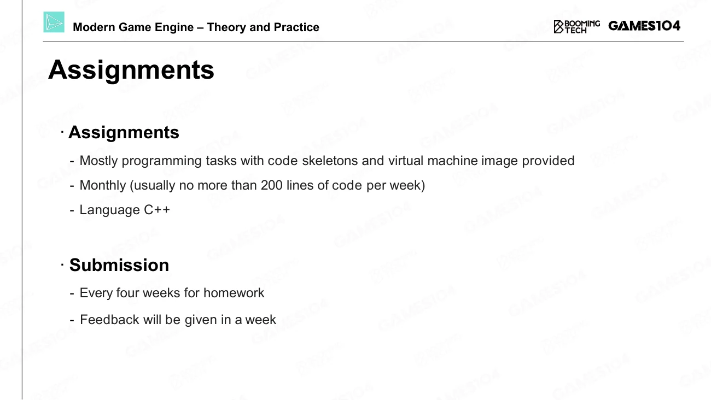
补充说明
课程网站与提交地址见课件，自学者可以关注 Booming Tech 的公开资料。
常见坑
只看视频不写代码 → 引擎知识无法内化 → 一定要跟着 Mini Engine 动手。
项目选题过大 → 做不完，失去反馈 → 先做最小可运行版本，再迭代。
UE / Unity 落地
如果你主用 UE，可以把 Mini Engine 的每个模块与 UE 对应模块做笔记对比（如渲染循环 vs UE 的 RenderThread），加深理解。
作业用 C++，与 UE 的 C++ 开发同源，练好 C++ 对 UE 开发直接有益。
引擎对照表
| 概念 / 效果 | Unreal Engine | Unity |
|---|---|---|
引擎分层（工具/功能/核心/平台） | Editor 层、Engine 模块、Core 模块、HAL/平台层 | Editor 目录、Runtime 模块、Core 模块、平台相关插件 |
反射暴露到编辑器 | UPROPERTY/UFUNCTION 宏与反射系统 | C# 反射 + SerializedField + 自定义 Inspector |
可视化脚本/Graph-Driven | Blueprint 蓝图 | Visual Scripting / Shader Graph |
中间件式物理 | Chaos Physics | PhysX（默认） |
动态全局光照与虚拟几何 | Lumen / Nanite | URP/HDRP 的实时 GI 与 GPU Driven 方案 |
在线同步 | Replication（状态同步） | Netcode for GameObjects（状态同步） |
术语双语表
| English | 中文 | 说明 |
|---|---|---|
| Game Engine | 游戏引擎 | 主要面向电子游戏开发的软件框架，包含相关库与支持程序。 |
| Middleware | 中间件 | 引擎中可替换的独立模块，如物理、音频、动画。 |
| In-house Engine | 自研引擎 | 公司内部为特定项目深度优化的引擎。 |
| Toolchain | 工具链 | 编辑器、资源管线、调试工具等支撑开发效率的工具集合。 |
| Reflection | 反射 | 让程序在运行时获取类型信息，常用于把变量/函数暴露到编辑器。 |
| Data Schema | 数据模式 | 对系统所处理数据结构的正式描述。 |
| Graph-Driven | 图形驱动 | 用可视化节点图搭建逻辑，如蓝图。 |
| Motion Matching | 运动匹配 | 一种基于数据检索的动画技术，减少手工状态机。 |
| DOP/ECS | 面向数据编程/实体组件系统 | 把数据与代码分离、按数据布局优化的编程范式。 |
| Lockstep Synchronization | 锁步同步 | 所有客户端按相同输入推进相同逻辑的同步方式。 |
课后练习
01 用自己的话给出游戏引擎的定义，并说明“框架”和“支持程序”分别指什么。
查看答案
提示：
参考课件第 21-22 页。
游戏引擎是主要面向电子游戏开发的软件框架，通常包含相关库与支持程序。“框架”指可复用的运行时骨架（渲染循环、资源管理、输入、场景组织等）；“支持程序”指编辑器、资源管线、调试工具等开发支撑工具。
02 Wolfenstein 3D、Doom、Quake 各自在引擎史上解决了什么关键问题？
查看答案
提示：
按“分离内容与逻辑—在线分发与模组—实时 3D 与硬件加速”的线索。
Wolfenstein 3D：John Carmack 把引擎核心功能与游戏资产分离，奠定引擎复用性。Doom：定义 FPS，首创在线分发、3D 图形、网络对战与 WAD 模组支持，使引擎成为内容平台。Quake：提供完整实时 3D 渲染并支持 OpenGL 硬件加速，从伪 3D 跨到真 3D。
03 列举游戏引擎的主要子系统（至少 6 个），并各用一句话说明它解决什么问题。
查看答案
提示：
参考第 36 页的 Basic Elements 图。
渲染（把世界画出来）、动画（让角色动起来）、物理（模拟碰撞与刚体）、Gameplay（事件/脚本/可视化逻辑）、工具链（编辑器与资源管线，提升开发效率）、在线（同步与一致性）、音频（声音播放与空间化）、资源管理（加载与生命周期）。
04 解释“God with Limited Power in Realtime”这句话的含义，并举两个引擎中“做取舍”的例子。
查看答案
提示：
从实时约束与算力有限出发。
引擎试图在虚拟世界里模拟一切，但算力、内存、带宽有限，且必须在每帧极短时间内完成，所以必须做近似与取舍。例子：渲染用 LOD/剔除/烘焙光照近似；物理用简化碰撞体与休眠机制；网络用插值/预测掩盖延迟。
05 如果你只用 UE 做游戏，为什么还要学 Mini Engine？请给出至少两条理由。
查看答案
提示：
从“透视感”和“C++ 同源”角度。
1）亲手实现渲染循环、资源管理、事件系统后，对 UE 的内部行为有透视感，排查问题更快；2）Mini Engine 用 C++，与 UE 的 C++ 开发同源，练好 C++ 直接有益；3）建立引擎分层与子系统地图，避免只会调参数不懂原理。